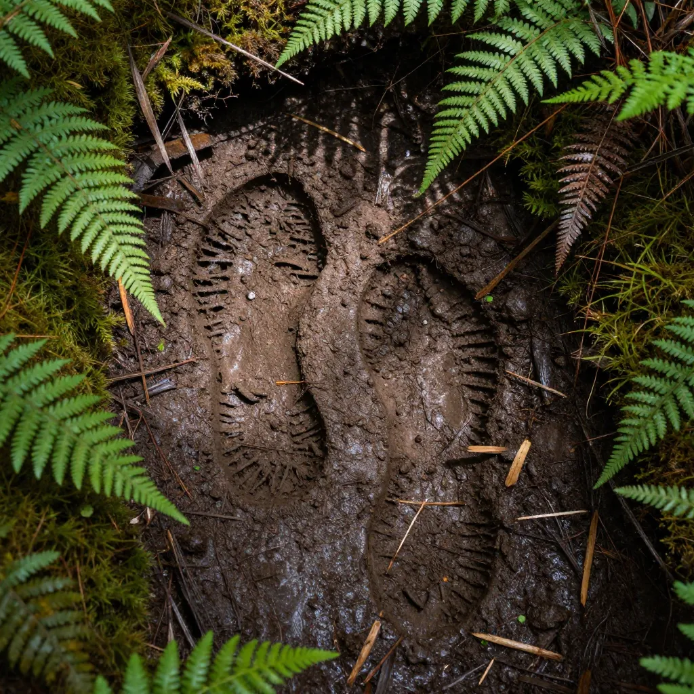
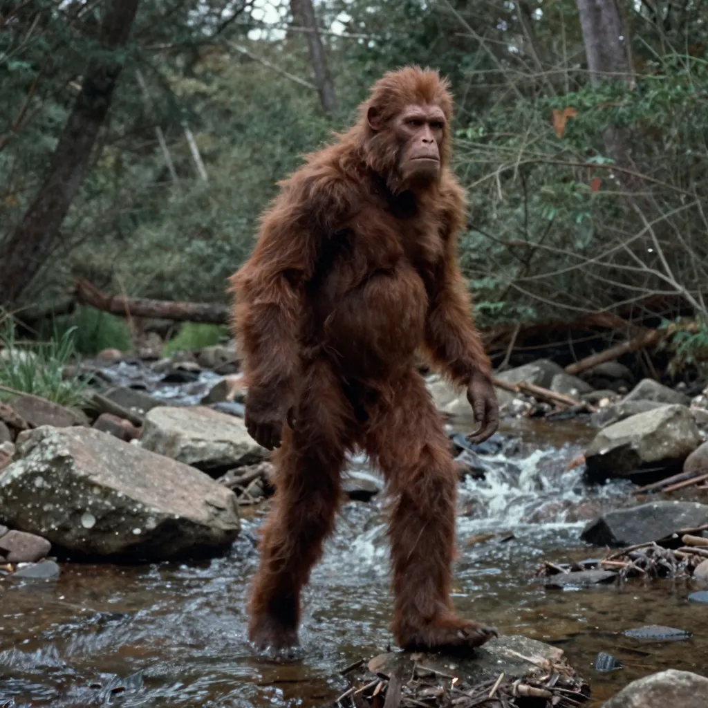

Bigfoot: The Elusive Creature That Keeps Eyewitnesses Coming Forward

Bigfoot has been reported in every U.S. state except Hawaii, with thousands of documented sightings.
In the predawn darkness of October 20, 1967, Roger Patterson and Bob Gimlin rode horseback along the banks of Bluff Creek in Northern California. Patterson, a rodeo rider turned Bigfoot enthusiast, was filming a documentary about the legendary creature. What happened next would become the most analyzed piece of wildlife footage in history — and the most debated. A large, hairy, bipedal figure emerged from the tree line, glanced over its right shoulder directly at the camera, and strode purposefully into the forest. The creature's arms swung low, almost to its knees. Its breasts were visible, suggesting a female. In 59.5 seconds of jittery 16mm film, Patterson and Gimlin captured something that has divided scientists, skeptics, and believers for nearly six decades.
Whether you call it Bigfoot, Sasquatch, the Mountain Devil, or the Wild Man, this creature has been reported across North America for centuries. Indigenous peoples from the Pacific Northwest to the Great Lakes described giant, hairy beings in their oral traditions long before European contact. Today, Bigfoot is far more than a cryptid — it's a cultural phenomenon that raises genuine questions about what we know about the wilderness and what might still be hiding in it.
A Creature With Deep Roots
Bigfoot is not a modern invention. Long before the first newspaper reports of "wild men" in the 19th-century American press, Indigenous cultures across North America told stories of large, hair-covered beings that lived in the forest. The Sts'ailes people of British Columbia call the creature Sasq'et, meaning "wild man" or "hairy man." The Lummi of Washington State speak of Tsiatko — tall, swift beings that ranged the forests. These traditions are not myths in the Western sense of "fiction"; they are oral histories describing encounters that were treated as real events.
- 🐾 Bigfoot sightings have been reported in every U.S. state except Hawaii and in most Canadian provinces
- 🌲 The Pacific Northwest — particularly Washington, Oregon, and Northern California — remains the global hotspot for reported encounters
- 📊 The Bigfoot Field Researchers Organization (BFRO) has catalogued over 5,000 credible sightings in North America
- 👣 Footprint casts numbering in the hundreds have been collected, some with anatomical details that would be extremely difficult to fake
- 🗣️ Over 60 distinct Native American tribes have traditions describing large, hairy, human-like beings
The Patterson-Gimlin Film: Authentic or Hoax?
The Patterson-Gimlin film remains the single most important piece of evidence in the Bigfoot debate. Shot on 16mm Kodak film, the footage shows a large bipedal creature walking away from the camera, turning briefly to look back, and then disappearing into the trees. The film has been subjected to frame-by-frame analysis by filmmakers, anatomists, and biomechanics experts.
Those who argue for authenticity point to several details: the creature's walking gait appears to include a midtarsal break — a flexing of the foot midfoot that humans don't normally have but that is characteristic of apes. The muscle movement under the skin appears consistent with living tissue, not a costume. The creature's proportions — long arms, short neck, conical head — don't match a human in a suit.
Skeptics counter that a skilled costume maker could have created the suit, and note that Patterson had a financial motive: he was actively seeking investors for a Bigfoot documentary. No suit has ever been produced, but the absence of a suit is not proof of a creature. The debate remains at an impasse.

Hundreds of footprint casts show dermal ridges and anatomical details difficult to fabricate.
The Evidence: What Do We Actually Have?
Bigfoot research exists in a frustrating gray zone between credible witness testimony and the absence of definitive physical proof. No bones, no body, no DNA sample has been conclusively verified by mainstream science. But that doesn't mean the evidence is negligible.
Footprints and Trackways
Over the decades, hundreds of footprint casts have been collected from remote locations. Many show anatomical details — dermal ridges (fingerprint-like patterns on the soles), scar tissue, and toe movement indicators — that would require an extremely sophisticated understanding of primate foot anatomy to fabricate. Dr. Jeffrey Meldrum, a professor of anatomy and anthropology at Idaho State University, has examined over 200 casts and argues that many display features consistent with a large, bipedal primate distinct from humans.
The Blue Mountains trackway of 1996 in Oregon produced over 200 prints in a continuous line extending for nearly a mile. The stride length, pressure ridges, and depth penetration were consistent with a creature weighing 600-800 pounds.
Eyewitness Accounts: Quantity and Quality
What makes Bigfoot difficult to dismiss entirely is the sheer volume and credibility of some witnesses. The reports include law enforcement officers, wildlife biologists, military personnel, and experienced outdoorsmen — people trained in observation who have no obvious motive to fabricate stories. Many witnesses are visibly distressed when recounting their experiences, displaying physiological signs consistent with genuine alarm.
Sightings often share common details: an overwhelming smell described as "rotting garbage mixed with wet dog", the sound of loud wood-knocking or rock-throwing, and the creature's apparent awareness of being observed. These patterns repeat across geographically separated witnesses who had no contact with each other.

The Patterson-Gimlin film remains the most analyzed piece of cryptid evidence in history.
Science vs. Skepticism: The Great Debate
Mainstream science has been reluctant to engage with Bigfoot research, and for understandable reasons. The burden of proof for confirming a new species is extraordinarily high — and rightfully so. A single type specimen (a body or skeletal remains) would settle the question definitively. In the absence of such evidence, the scientific consensus remains that Bigfoot does not exist.
Arguments Against Existence
The most compelling skeptical argument is biological: a breeding population of large primates in North America would require thousands of individuals to maintain genetic diversity. Such a population would leave behind remains, get hit by vehicles, show up on trail cameras, and be detected by environmental DNA sampling. The fact that none of these things has happened strongly suggests the creature is not real.
Additionally, there is no fossil evidence of large bipedal primates in North America. While the extinct giant ape Gigantopithecus did exist in Asia (and some suggest Bigfoot could be its descendant), there is no evidence this species ever crossed the Bering Land Bridge.
Arguments For Further Investigation
Proponents point out that new large mammal species are still being discovered. The saola, a 200-pound antelope, was discovered in Vietnam in 1992. New species of primates are identified regularly in remote regions. North America has vast, poorly explored wilderness areas — particularly in the Pacific Northwest, British Columbia, and Alaska. The absence of evidence is not evidence of absence, they argue, particularly when the animal in question would be nocturnal, highly intelligent, and likely avoidant of humans.
Recent advances in environmental DNA (eDNA) sampling — which can detect genetic material from soil, water, and air — offer a promising new avenue for investigation. If Bigfoot exists, eDNA techniques could potentially detect it without requiring a physical specimen, much as scientists have used these methods to study elusive species like the the Tunguska Event and other cryptids.
Bigfoot in American Culture
Whether or not Bigfoot exists as a biological creature, its cultural footprint is undeniable. Bigfoot appears on restaurants, road signs, tourism brochures, and even the official flag of the city of Willow Creek, California. The creature has been featured in hundreds of films, television shows, and books. Annual Bigfoot conferences draw thousands of attendees, and the Bigfoot economy — guided expeditions, merchandise, and media — generates millions of dollars annually.
Bigfoot represents something deeper than cryptozoology. In an age when satellites map every square inch of the planet and smartphones track our every move, the idea that something large, intelligent, and unknown could exist in the forests just beyond our reach satisfies a primal human need for mystery and wonder.
Frequently Asked Questions
Has anyone ever proven Bigfoot exists?
No. Despite thousands of sightings, hundreds of footprint casts, and the famous Patterson-Gimlin film, no conclusive physical evidence — such as a body, skeletal remains, or verified DNA — has ever been produced. The scientific consensus is that Bigfoot has not been proven to exist.
What is the Patterson-Gimlin film?
Shot in October 1967 in Northern California, the Patterson-Gimlin film shows a large, hairy, bipedal creature walking through the forest. It remains the most famous and analyzed piece of Bigfoot evidence. Its authenticity has never been conclusively proven or debunked.
Could Bigfoot be a known animal people mistake for something else?
Many sightings are likely mistaken identifications of bears (especially standing on hind legs), large primates, or other known animals. However, some witnesses — including trained wildlife professionals — have described details inconsistent with any known North American animal.
Why hasn't a trail camera captured Bigfoot?
Trail cameras have captured millions of images of wildlife across North America, yet none have produced an unambiguous Bigfoot image. Skeptics argue this is strong evidence against existence. Proponents counter that trail cameras are typically placed at low heights and may not cover the remote, rugged terrain where sightings occur.
Sources & References
- Wikipedia: Bigfoot — Comprehensive overview of sightings, evidence, and cultural impact
- Britannica: Bigfoot — History and analysis of the Sasquatch legend
- National Geographic: The science (and lack thereof) behind Bigfoot
📖 Recommended Reading
Want to learn more? Check out Sasquatch: Legend Meets Science by Jeff Meldrum on Amazon for a deeper dive into this fascinating topic. (As an Amazon Associate, we earn from qualifying purchases.)